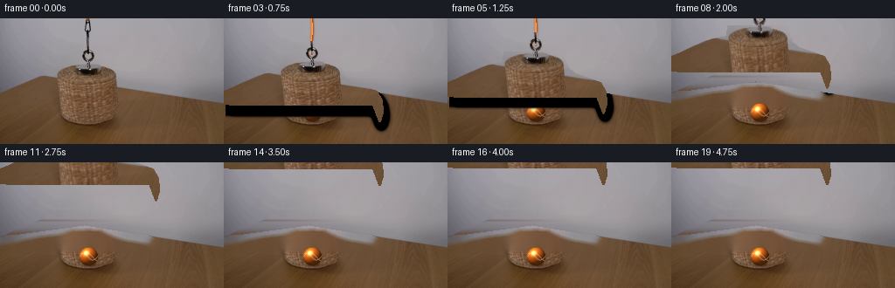
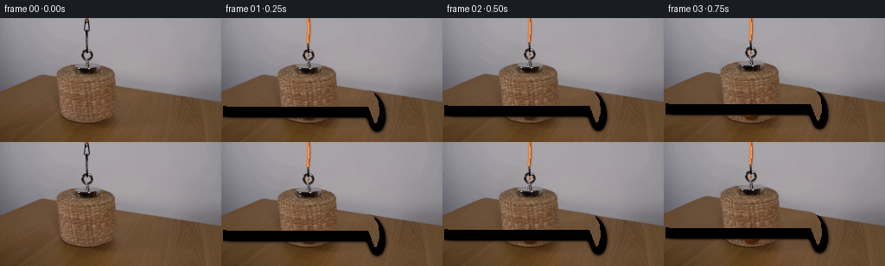
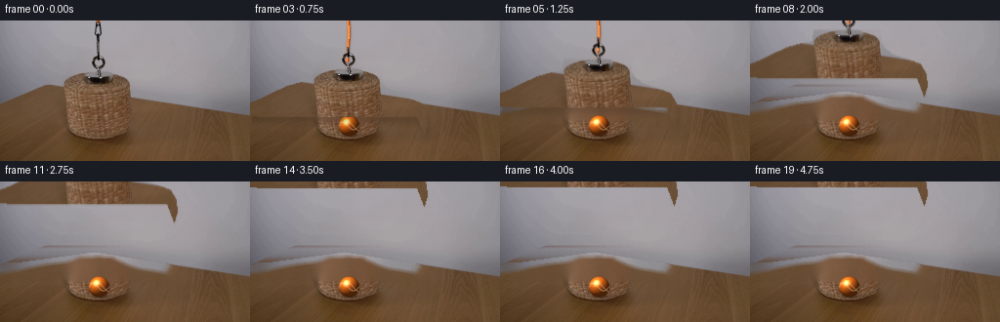
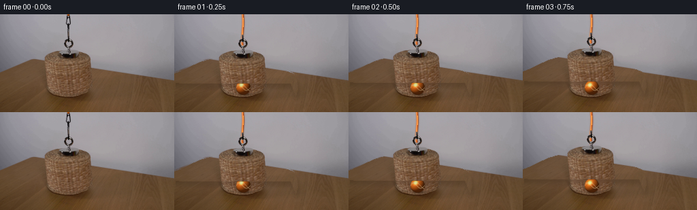

CODING AGENTS AS PIXEL WORLD MODELS
traex/DeepSeek-V4.1-Flash · 0171
点击播放 · 原生 RGB 像素
逐轮保存的候选
回放视频、检查图与代码变化。
每份候选均可单独播放。实际图片检查记录在下方工具轨迹中。
候选 01播放与检查图
点击播放 · 原生 RGB 像素


展开代码变化
--- 上一保存版本
+++ 本次保存版本
@@ -0,0 +1,404 @@
+from pathlib import Path
+
+import cv2
+import numpy as np
+from PIL import Image
+
+import artifact_io
+
+
+ROOT = Path(__file__).resolve().parent
+WIDTH = 256
+HEIGHT = 144
+FRAME_COUNT = 20
+FPS = 4
+
+
+def _smoothstep(edge0, edge1, value):
+ x = np.clip((value - edge0) / max(edge1 - edge0, 1e-6), 0.0, 1.0)
+ return x * x * (3.0 - 2.0 * x)
+
+
+def _horizon_mask():
+ yy, xx = np.mgrid[0:HEIGHT, 0:WIDTH]
+ left_edge = 85.0 - xx * (13.0 / 96.0)
+ right_edge = 72.0 + (xx - 96.0) * (25.0 / (WIDTH - 97.0))
+ horizon = np.where(xx < 96.0, left_edge, right_edge)
+ return yy >= horizon, horizon
+
+
+def _make_masks(frame):
+ body = np.zeros((HEIGHT, WIDTH), dtype=np.uint8)
+ polygon = np.array(
+ [
+ [65, 52],
+ [133, 52],
+ [134, 63],
+ [137, 70],
+ [145, 77],
+ [160, 82],
+ [174, 87],
+ [180, 97],
+ [181, 110],
+ [178, 120],
+ [171, 101],
+ [12, 101],
+ [0, 100],
+ [0, 87],
+ [8, 84],
+ [20, 78],
+ [38, 70],
+ [52, 66],
+ [64, 64],
+ ],
+ dtype=np.int32,
+ )
+ cv2.fillPoly(body, [polygon], 255)
+
+ # The dark loop above the wicker rim is the magnet/hook assembly. Its
+ # pixels differ sharply from the smooth grey wall, so key it in place.
+ hardware = np.zeros_like(body)
+ roi = np.zeros_like(body, dtype=bool)
+ roi[30:56, 86:116] = True
+ wall_samples = np.concatenate(
+ [frame[30:56, 48:82], frame[30:56, 120:154]], axis=1
+ )
+ wall_row = np.median(wall_samples, axis=1).astype(np.int16)
+ local_diff = np.zeros((HEIGHT, WIDTH), dtype=np.int16)
+ local_diff[30:56] = np.abs(
+ frame[30:56].astype(np.int16) - wall_row[:, None, :]
+ ).max(axis=2)
+ sat = cv2.cvtColor(frame, cv2.COLOR_RGB2HSV)[:, :, 1]
+ hardware_pixels = roi & ((local_diff > 16) | (sat > 24))
+ hardware[hardware_pixels] = 255
+ hardware = cv2.morphologyEx(
+ hardware, cv2.MORPH_CLOSE, np.ones((3, 3), np.uint8), iterations=1
+ )
+
+ cord = np.zeros_like(body)
+ cord_roi = np.zeros_like(body, dtype=bool)
+ cord_roi[0:54, 92:111] = True
+ cord_samples = np.concatenate(
+ [frame[0:54, 50:84], frame[0:54, 119:153]], axis=1
+ )
+ cord_wall_row = np.median(cord_samples, axis=1).astype(np.int16)
+ cord_diff = np.zeros((HEIGHT, WIDTH), dtype=np.int16)
+ cord_diff[0:54] = np.abs(
+ frame[0:54].astype(np.int16) - cord_wall_row[:, None, :]
+ ).max(axis=2)
+ cord_pixels = cord_roi & ((cord_diff > 15) | (sat > 20))
+ cord[cord_pixels] = 255
+ cord = cv2.morphologyEx(
+ cord, cv2.MORPH_CLOSE, np.ones((3, 3), np.uint8), iterations=1
+ )
+ return body, hardware, cord
+
+
+def _texture_noise(seed):
+ rng = np.random.default_rng(seed)
+ broad = cv2.GaussianBlur(
+ rng.normal(0.0, 1.0, (HEIGHT, WIDTH)).astype(np.float32),
+ (0, 0),
+ sigmaX=2.2,
+ sigmaY=1.0,
+ )
+ fine = cv2.GaussianBlur(
+ rng.normal(0.0, 1.0, (HEIGHT, WIDTH)).astype(np.float32),
+ (0, 0),
+ sigmaX=0.55,
+ sigmaY=0.55,
+ )
+ return broad * 1.7 + fine * 1.25
+
+
+def _clean_plate(frame, body, hardware, cord):
+ removal = np.maximum.reduce([body, hardware, cord])
+ removal = cv2.dilate(removal, np.ones((3, 3), np.uint8), iterations=1)
+ clean = cv2.inpaint(frame, removal, 5, cv2.INPAINT_TELEA)
+ clean_f = clean.astype(np.float32)
+ table, horizon = _horizon_mask()
+
+ # Replace broad inpaint smears in the wall with a horizontal interpolation
+ # from the untouched grey pixels on either side of the basket.
+ for y in range(0, 83):
+ row_mask = removal[y] > 0
+ if not np.any(row_mask):
+ continue
+ x_valid = np.where((removal[y] == 0) & (~table[y]))[0]
+ x_bad = np.where(row_mask & (~table[y]))[0]
+ if len(x_valid) < 3 or len(x_bad) == 0:
+ continue
+ for channel in range(3):
+ clean_f[y, x_bad, channel] = np.interp(
+ x_bad, x_valid, frame[y, x_valid, channel].astype(np.float32)
+ )
+
+ # Retain a little photographic grain in the reconstructed area.
+ noise = _texture_noise(17)
+ alpha = (removal.astype(np.float32) / 255.0)[:, :, None]
+ clean_f += noise[:, :, None] * alpha
+ clean = np.clip(clean_f, 0, 255).astype(np.uint8)
+
+ # Slightly soften the reconstructed seam while leaving the original plate
+ # elsewhere untouched.
+ feathered = cv2.GaussianBlur(clean, (3, 3), 0.55)
+ edge = cv2.GaussianBlur(removal, (3, 3), 1.2).astype(np.float32) / 255.0
+ blend = np.clip(edge * 0.30, 0.0, 0.30)[:, :, None]
+ clean = (
+ clean.astype(np.float32) * (1.0 - blend)
+ + feathered.astype(np.float32) * blend
+ ).clip(0, 255).astype(np.uint8)
+ return clean, removal
+
+
+def _draw_shadow(frame, cx, cy, rx, ry, opacity):
+ scale = 4
+ x0 = max(0, int(np.floor(cx - rx - 3)))
+ x1 = min(WIDTH, int(np.ceil(cx + rx + 3)))
+ y0 = max(0, int(np.floor(cy - ry - 3)))
+ y1 = min(HEIGHT, int(np.ceil(cy + ry + 3)))
+ if x0 >= x1 or y0 >= y1:
+ return frame
+
+ sw = (x1 - x0) * scale
+ sh = (y1 - y0) * scale
+ yy, xx = np.mgrid[0:sh, 0:sw]
+ px = (xx + 0.5) / scale + x0
+ py = (yy + 0.5) / scale + y0
+ d = ((px - cx) / rx) ** 2 + ((py - cy) / ry) ** 2
+ alpha_hi = opacity * np.exp(-2.1 * d) * (1.0 - _smoothstep(0.72, 1.0, d))
+ alpha = cv2.resize(
+ alpha_hi.astype(np.float32),
+ (x1 - x0, y1 - y0),
+ interpolation=cv2.INTER_AREA,
+ )
+ patch = frame[y0:y1, x0:x1].astype(np.float32)
+ shadow_rgb = np.array([29.0, 18.0, 10.0], dtype=np.float32)
+ patch = patch * (1.0 - alpha[:, :, None]) + shadow_rgb * alpha[:, :, None]
+ frame[y0:y1, x0:x1] = np.clip(patch, 0, 255).astype(np.uint8)
+ return frame
+
+
+def _draw_ball(frame, cx=101.5, cy=108.0, radius=10.7):
+ frame = _draw_shadow(frame, cx + 2.2, cy + radius * 0.88, radius * 1.03, 3.2, 0.38)
+ scale = 4
+ x0 = max(0, int(np.floor(cx - radius - 2)))
+ x1 = min(WIDTH, int(np.ceil(cx + radius + 2)))
+ y0 = max(0, int(np.floor(cy - radius - 2)))
+ y1 = min(HEIGHT, int(np.ceil(cy + radius + 2)))
+ sw = (x1 - x0) * scale
+ sh = (y1 - y0) * scale
+ yy, xx = np.mgrid[0:sh, 0:sw]
+ px = (xx + 0.5) / scale + x0
+ py = (yy + 0.5) / scale + y0
+ u = (px - cx) / radius
+ v = (py - cy) / radius
+ r2 = u * u + v * v
+ inside = r2 <= 1.0
+ nz = np.sqrt(np.clip(1.0 - r2, 0.0, 1.0))
+
+ light = np.array([-0.48, -0.68, 0.55], dtype=np.float32)
+ light /= np.linalg.norm(light)
+ diffuse = np.clip(u * light[0] + v * light[1] + nz * light[2], 0.0, 1.0)
+ half = light + np.array([0.0, 0.0, 1.0], dtype=np.float32)
+ half /= np.linalg.norm(half)
+ specular = np.clip(u * half[0] + v * half[1] + nz * half[2], 0.0, 1.0) ** 26
+ rim = np.clip(1.0 - nz, 0.0, 1.0) ** 2.2
+
+ base = np.array([224.0, 103.0, 24.0], dtype=np.float32)
+ warm_hi = np.array([255.0, 178.0, 52.0], dtype=np.float32)
+ shade = (0.34 + 0.78 * diffuse)[:, :, None]
+ color = base[None, None, :] * shade
+ color = color * (1.0 - 0.34 * rim[:, :, None]) + warm_hi * (0.15 * diffuse**2)[:, :, None]
+ color += specular[:, :, None] * np.array([255.0, 238.0, 176.0])
+
+ # Two narrow, slightly curved tennis seams.
+ seam1_y = 0.38 * np.sin(2.9 * u + 0.35)
+ seam2_y = -0.47 * np.sin(2.35 * u + 2.25)
+ d1 = np.abs(v - seam1_y)
+ d2 = np.abs(v - seam2_y)
+ seam = np.maximum(
+ np.exp(-((d1 / 0.038) ** 2)),
+ np.exp(-((d2 / 0.038) ** 2)),
+ )
+ seam *= _smoothstep(0.02, 0.18, nz)
+ seam_color = np.array([249.0, 222.0, 172.0], dtype=np.float32)
+ color = color * (1.0 - 0.68 * seam[:, :, None]) + seam_color * (0.68 * seam[:, :, None])
+
+ # A restrained fuzzy edge keeps the ball photographic at this resolution.
+ r = np.sqrt(r2)
+ alpha_hi = 1.0 - _smoothstep(0.955, 1.025, r)
+ alpha_hi *= inside | (r < 1.025)
+ alpha = cv2.resize(
+ alpha_hi.astype(np.float32),
+ (x1 - x0, y1 - y0),
+ interpolation=cv2.INTER_AREA,
+ )
+ rgb = cv2.resize(
+ np.clip(color, 0, 255).astype(np.float32),
+ (x1 - x0, y1 - y0),
+ interpolation=cv2.INTER_AREA,
+ )
+ patch = frame[y0:y1, x0:x1].astype(np.float32)
+ patch = patch * (1.0 - alpha[:, :, None]) + rgb * alpha[:, :, None]
+ frame[y0:y1, x0:x1] = np.clip(patch, 0, 255).astype(np.uint8)
+ return frame
+
+
+def _draw_cord(frame, dy):
+ attach_y = 50.0 + dy
+ if attach_y <= 0:
+ return frame
+ end_y = int(np.ceil(min(attach_y, 52.0 + dy + 4.0)))
+ if end_y <= 0:
+ return frame
+ scale = 4
+ mask = np.zeros((HEIGHT * scale, WIDTH * scale), dtype=np.uint8)
+ base_x = 100.5
+ for y in range(0, end_y + 1):
+ bend = 0.75 * np.sin((y + 2.0) * 0.12)
+ x = int(round((base_x + bend) * scale))
+ yy = int(round((y + 0.5) * scale))
+ cv2.circle(mask, (x, yy), int(1.65 * scale), 255, -1, lineType=cv2.LINE_AA)
+ alpha_hi = cv2.GaussianBlur(mask, (0, 0), sigmaX=0.8 * scale)
+ alpha = cv2.resize(
+ alpha_hi.astype(np.float32) / 255.0,
+ (WIDTH, HEIGHT),
+ interpolation=cv2.INTER_AREA,
+ )
+ yy, xx = np.mgrid[0:HEIGHT, 0:WIDTH]
+ center_x = base_x + 0.75 * np.sin((yy + 2.0) * 0.12)
+ edge = np.clip((xx - center_x) / 2.2, -1.0, 1.0)
+ rope = np.array([188.0, 78.0, 20.0], dtype=np.float32)
+ rope_light = np.array([230.0, 132.0, 57.0], dtype=np.float32)
+ rope_dark = np.array([92.0, 35.0, 8.0], dtype=np.float32)
+ side = edge[:, :, None]
+ color = np.where(side < 0, rope_light, rope_dark)
+ color = color * (1.0 - 0.45 * np.abs(side)) + rope * 0.45
+ a = alpha[:, :, None]
+ frame_f = frame.astype(np.float32)
+ frame_f = frame_f * (1.0 - a) + color * a
+ return np.clip(frame_f, 0, 255).astype(np.uint8)
+
+
+def _paste_basket(frame, sprite, alpha, dy, speed):
+ translation = np.float32([[1, 0, 0], [0, 1, dy]])
+ motion_offsets = [0]
+ if speed > 4:
+ motion_offsets.append(1)
+ if speed > 10:
+ motion_offsets.append(2)
+ weights = np.array([0.70, 0.20, 0.10], dtype=np.float32)[: len(motion_offsets)]
+ weights /= weights.sum()
+
+ accum_rgb = np.zeros((HEIGHT, WIDTH, 3), dtype=np.float32)
+ accum_a = np.zeros((HEIGHT, WIDTH), dtype=np.float32)
+ for offset, weight in zip(motion_offsets, weights):
+ matrix = translation + np.float32([[0, 0, 0], [0, 0, offset]])
+ warped = cv2.warpAffine(
+ sprite,
+ matrix,
+ (WIDTH, HEIGHT),
+ flags=cv2.INTER_LINEAR,
+ borderMode=cv2.BORDER_CONSTANT,
+ borderValue=(0, 0, 0),
+ ).astype(np.float32)
+ warped_a = cv2.warpAffine(
+ alpha,
+ matrix,
+ (WIDTH, HEIGHT),
+ flags=cv2.INTER_LINEAR,
+ borderMode=cv2.BORDER_CONSTANT,
+ borderValue=0,
+ ).astype(np.float32)
+ accum_rgb += warped * (warped_a[:, :, None] * weight)
+ accum_a += warped_a * weight
+
+ valid = accum_a > 1e-5
+ accum_rgb[valid] /= accum_a[valid, None]
+ a = np.clip(accum_a, 0.0, 1.0)[:, :, None]
+ out = frame.astype(np.float32) * (1.0 - a) + accum_rgb * a
+ return np.clip(out, 0, 255).astype(np.uint8)
+
+
+def _draw_lift_shadow(frame, alpha, dy):
+ lift = max(0, -dy)
+ strength = 0.17 * max(0.0, 1.0 - lift / 80.0)
+ if strength <= 0.003:
+ return frame
+ shadow_alpha = cv2.GaussianBlur(alpha.astype(np.float32), (0, 0), 3.2)
+ shadow_alpha = cv2.warpAffine(
+ shadow_alpha,
+ np.float32([[1, 0, 2], [0, 1, dy + 7]]),
+ (WIDTH, HEIGHT),
+ flags=cv2.INTER_LINEAR,
+ borderMode=cv2.BORDER_CONSTANT,
+ borderValue=0,
+ )
+ table, _ = _horizon_mask()
+ shadow_alpha *= table
+ a = (shadow_alpha * strength)[:, :, None]
+ out = frame.astype(np.float32) * (1.0 - a) + np.array([25, 15, 8], np.float32) * a
+ return np.clip(out, 0, 255).astype(np.uint8)
+
+
+def _lift_curve():
+ # A short hold, a smooth pull, and a soft settle near the top edge.
+ values = [
+ 0,
+ 0,
+ -1,
+ -3,
+ -7,
+ -13,
+ -21,
+ -31,
+ -43,
+ -56,
+ -68,
+ -79,
+ -87,
+ -92,
+ -95,
+ -96,
+ -96,
+ -95,
+ -96,
+ -96,
+ ]
+ return np.asarray(values, dtype=np.float32)
+
+
+def generate():
+ frame = np.array(Image.open(ROOT / "first_frame.png").convert("RGB"))
+ body, hardware, cord = _make_masks(frame)
+ clean, removal = _clean_plate(frame, body, hardware, cord)
+ plate = _draw_ball(clean.copy())
+
+ sprite_alpha = np.maximum(body, hardware)
+ sprite_alpha = cv2.GaussianBlur(sprite_alpha, (3, 3), 0.45)
+ sprite = frame.copy()
+ lift = _lift_curve()
+
+ frames = []
+ for index in range(FRAME_COUNT):
+ if index == 0:
+ frames.append(frame.copy())
+ continue
+ dy = float(lift[index])
+ speed = abs(float(lift[index] - lift[index - 1]))
+ canvas = plate.copy()
+ canvas = _draw_lift_shadow(canvas, sprite_alpha, dy)
+ canvas = _draw_cord(canvas, dy)
+ canvas = _paste_basket(canvas, sprite, sprite_alpha, dy, speed)
+ frames.append(canvas)
+
+ frames = np.stack(frames, axis=0).astype(np.uint8)
+ assert frames.shape == (FRAME_COUNT, HEIGHT, WIDTH, 3)
+ assert np.array_equal(frames[0], frame)
+ artifact_io.save(frames, ROOT)
+ return frames
+
+
+if __name__ == "__main__":
+ generate()
候选 02播放与检查图
点击播放 · 原生 RGB 像素


展开代码变化
--- 上一保存版本
+++ 本次保存版本
@@ -311,8 +311,9 @@
borderMode=cv2.BORDER_CONSTANT,
borderValue=0,
).astype(np.float32)
- accum_rgb += warped * (warped_a[:, :, None] * weight)
- accum_a += warped_a * weight
+ warped_a_norm = warped_a / 255.0
+ accum_rgb += warped * (warped_a_norm[:, :, None] * weight)
+ accum_a += warped_a_norm * weight
valid = accum_a > 1e-5
accum_rgb[valid] /= accum_a[valid, None]
@@ -326,7 +327,7 @@
strength = 0.17 * max(0.0, 1.0 - lift / 80.0)
if strength <= 0.003:
return frame
- shadow_alpha = cv2.GaussianBlur(alpha.astype(np.float32), (0, 0), 3.2)
+ shadow_alpha = cv2.GaussianBlur(alpha.astype(np.float32) / 255.0, (0, 0), 3.2)
shadow_alpha = cv2.warpAffine(
shadow_alpha,
np.float32([[1, 0, 2], [0, 1, dy + 7]]),
可观测工具轨迹
实际执行的命令与返回图片。
命令 1exit 0
/bin/bash -c "pwd && rg --files -g '"'!*.pyc'"' -g '"'!__pycache__'"' | sort | sed -n '1,200p'"
命令 2exit 0
/bin/bash -c "sed -n '1,240p' prompt.txt"
命令 3exit 0
/bin/bash -c "sed -n '1,280p' GENERATION_RULES.md"
命令 4exit 0
/bin/bash -c 'file first_frame.png 2>/dev/null; identify first_frame.png 2>/dev/null || true; git status --short 2>/dev/null || true'
命令 5exit 0
/bin/bash -c "sed -n '1,260p' artifact_io.py"
命令 6exit 0
/bin/bash -c "sed -n '1,300p' player_template.html"
命令 7exit 0
/bin/bash -c "python - <<'PY'
from PIL import Image
im=Image.open('first_frame.png')
print(im.size, im.mode)
print(im.getpixel((0,0)), im.getpixel((128,72)), im.getpixel((255,143)))
print('extrema', im.getextrema())
print('colors', len(im.getcolors(maxcolors=1000000) or []))
PY"命令 8exit 0
/bin/bash -c "python - <<'PY'
from PIL import Image
import numpy as np
im=np.array(Image.open('first_frame.png'))
# kmeans using cv2 if available
try:
import cv2
Z=im.reshape(-1,3).astype(np.float32)
crit=(cv2.TERM_CRITERIA_EPS+cv2.TERM_CRITERIA_MAX_ITER,100,0.2)
_,lab,cen=cv2.kmeans(Z,12,None,crit,10,cv2.KMEANS_PP_CENTERS)
lab=lab.reshape(im.shape[:2]); cen=cen.astype(int)
for i,(c,n) in enumerate(sorted([(i,np.sum(lab==i)) for i in range(12)], key=lambda x:-x[1])):
ys,xs=np.where(lab==c)
print(i, 'rgb',cen[c].tolist(),'n',n,'bbox',xs.min(),ys.min(),xs.max(),ys.max())
except Exception as e: print(e)
PY"命令 9exit 0
/bin/bash -c "python - <<'PY'
from PIL import Image
import numpy as np
im=np.array(Image.open('first_frame.png')).astype(float)
# grid avg 4x4, classify hue-ish and luminance
for y in range(0,144,4):
s=''
for x in range(0,256,4):
c=im[y:y+4,x:x+4].mean((0,1)); r,g,b=c
if r>g*1.28 and g>b*1.15 and r>70: ch='O' # orange/brown
elif r>g*1.18 and r<115 and g>b*1.12: ch='w' # dark wood
elif max(c)-min(c)<12 and r>120: ch='G'
elif max(c)-min(c)<15: ch='g'
elif r>g*1.12 and r>90: ch='t'
else: ch='?'
s+=ch
print(f'{y:03d} '+s)
PY"命令 10exit 0
/bin/bash -c "python - <<'PY'
from PIL import Image
import numpy as np
im=np.array(Image.open('first_frame.png'))
# Print runs by rows for coarse color classes
for y in [0,10,20,30,40,48,52,56,60,64,68,72,76,80,84,88,92,100,120,143]:
row=im[y]
# print samples x every 4 as R/G/B compact bucket: gray/table/basket/dark
s=''
for x in range(0,256,4):
r,g,b=row[x:x+4].mean(0)
if max(r,g,b)-min(r,g,b)<8: ch='.' if r>170 else '-' if r>140 else ':' if r>100 else ','
elif r>g*1.2 and g>b*1.1 and r>100: ch='B' # bright orange/gold
elif r>g*1.2 and g>b*1.1: ch='b' # dark brown
elif r>g*1.1 and g>b*1.1: ch='w'
elif b>r: ch='c'
else: ch='?'
s+=ch
print(f'{y:3d} {s}')
PY"命令 11exit 0
/bin/bash -c "python - <<'PY'
from PIL import Image
import numpy as np
im=np.array(Image.open('first_frame.png'))
# save a nearest upscaled frame as tmp for local inspection through pixels? no visual tools; print edge coordinates
# estimate basket top body boundaries for each y based on saturation/brightness
mx=im.max(2); mn=im.min(2); sat=mx-mn
mask=(im[:,:,0]>90)&(im[:,:,0]>im[:,:,1]*1.13)&(im[:,:,1]>im[:,:,2]*1.1)
for y in range(48,101,2):
xs=np.where(mask[y])[0]
print(y, (xs.min(),xs.max(),len(xs)) if len(xs) else None)
PY"命令 12exit 0
/bin/bash -c "python - <<'PY'
from PIL import Image
import numpy as np
im=np.array(Image.open('first_frame.png'))
# rows as run-length categories by rough color
for y in range(40,105,2):
vals=[]
for x in range(256):
r,g,b=map(int,im[y,x]); mx=max(r,g,b); mn=min(r,g,b)
if mx-mn<8: c='G' if r>120 else 'D' if r<50 else 'd'
elif r>g*1.15 and g>b*1.05: c='T' if r>80 else 't'
elif g>=r: c='C'
else: c='?'
if not vals or vals[-1][0]"'!=c: vals.append([c,x,x])
else: vals[-1][2]=x
# only major runs
vals=[v for v in vals if v[2]-v[1]>=2]
print(f'"'{y:3d}', ' '.join(f'{c}{a}-{b}' for c,a,b in vals))
PY"命令 13exit 0
/bin/bash -c "python - <<'PY'
from PIL import Image
import numpy as np
im=np.array(Image.open('first_frame.png')).astype(float)
# 2x2 downsample; classify object using hand-designed heuristics
h,w=im.shape[:2]
for y in range(0,h,2):
s=''
for x in range(0,w,2):
r,g,b=im[y:y+2,x:x+2].mean((0,1))
mx=max(r,g,b); mn=min(r,g,b); chrom=mx-mn
# classify
if chrom<10:
if r>175: c='@'
elif r>150: c='#'
elif r>120: c='+'
elif r>85: c='-'
elif r>55: c='.'
else: c=' '
elif r>g*1.30 and g>b*1.15 and r>95: c='O' # orange
elif r>g*1.18 and g>b*1.08 and r>75: c='B' # basket wood
elif r>g*1.08 and g>b*1.10: c='t' # table brown
elif g>=r*0.98: c='c' # cool
else: c='?'
s+=c
print(f'{y:03d} {s}')
PY"命令 14exit 0
/bin/bash -c "python - <<'PY'
from PIL import Image
import numpy as np
im=np.array(Image.open('first_frame.png')).astype(int)
# coords where dark line, print RGB neighborhood around center top
for y in range(0,56,4):
print('y',y, [tuple(im[y,x]) for x in range(92,108)])
PY"命令 15exit 0
/bin/bash -c "python - <<'PY'
from PIL import Image
import numpy as np
im=np.array(Image.open('first_frame.png')).astype(float)
for y in range(0,144,3):
r,g,b=im[y,:,0],im[y,:,1],im[y,:,2]
mx=np.max(im[y],1); mn=np.min(im[y],1); chrom=mx-mn
# wall: gray >110 and chrom<14 ; table: brown-ish and r>g>b
wall=(chrom<16)&(mx>105)
brown=(r>g*1.08)&(g>b*1.05)
dark=(mx<70)
def runs(mask):
d=np.diff(np.r_[False,mask,False].astype(int)); starts=np.where(d==1)[0]; ends=np.where(d==-1)[0]-1
return ' '.join(f'{a}-{b}' for a,b in zip(starts,ends) if b-a>=3)
print(f'{y:3d} W:{runs(wall)} B:{runs(brown)} D:{runs(dark)}')
PY"命令 16exit 0
/bin/bash -c "python - <<'PY'
from PIL import Image
import numpy as np
im=np.array(Image.open('first_frame.png')).astype(int)
for y in range(0,144,6):
# print darkest x and local 5x5 mean at x 90..110
row=im[y]
xs=np.argsort(row.mean(1))[:10]
print(y, xs.tolist(), [tuple(row[x]) for x in xs[:4]])
PY"命令 17exit 0
/bin/bash -c "python - <<'PY'
from PIL import Image
import numpy as np
im=np.array(Image.open('first_frame.png'))
# inspect a crop via symbolic ascii 2x2 around basket and top
for x0,x1,y0,y1,step in [(0,160,48,104,2),(40,145,0,60,2),(70,120,52,68,1)]:
print('CROP',x0,x1,y0,y1)
for y in range(y0,y1,step):
s=''
for x in range(x0,x1,step):
c=im[y:y+step,x:x+step].mean((0,1)); r,g,b=c; mx=max(c); mn=min(c)
if mx<45: ch='@'
elif mx-mn<9: ch='.' if mx>130 else ':'
elif r>g*1.25 and g>b*1.1: ch='O'
elif r>g*1.1 and g>b*1.05: ch='b'
elif r>g*1.03 and g>b*1.02: ch='t'
elif g>r: ch='c'
else: ch='?'
s+=ch
print(f'{y:03d} {s}')
PY"命令 18exit 0
/bin/bash -c "python - <<'PY'
from PIL import Image
import numpy as np
im=np.array(Image.open('first_frame.png')).astype(float)
for y in range(48,91):
r,g,b=im[y,:,0],im[y,:,1],im[y,:,2]
warm=(r>g*1.08)&(g>b*1.03)&(r>55)
d=np.diff(np.r_[False,warm,False].astype(int)); starts=np.where(d==1)[0]; ends=np.where(d==-1)[0]-1
runs=[(int(a),int(b)) for a,b in zip(starts,ends) if b-a>=1]
print(f'{y:3d}',runs)
PY"命令 19exit 0
/bin/bash -c "python - <<'PY'
from PIL import Image
import numpy as np
im=np.array(Image.open('first_frame.png')).astype(float)
# crop left object region 0:160, 48:104 to view as 2px block symbols with hue symbols detailed
for y in range(48,104,2):
s=''
for x in range(0,160,2):
c=im[y:y+2,x:x+2].mean((0,1)); r,g,b=c; mx=max(c); mn=min(c)
if mx<25: ch='@'
elif mx<55: ch='#'
elif mx<80: ch='*'
elif mx-mn<8: ch='.' if mx>130 else ':'
elif r>g*1.25 and g>b*1.08: ch='O'
elif r>g*1.13 and g>b*1.03: ch='o'
elif r>g*1.05 and g>b*1.02: ch='b'
elif g>r*1.03: ch='c'
else: ch='?'
s+=ch
print(f'{y:03d} {s}')
PY"命令 20exit 0
/bin/bash -c "python - <<'PY'
from PIL import Image
import numpy as np
im=np.array(Image.open('first_frame.png')).astype(float)
for y in range(80,100):
r,g,b=im[y,:,0],im[y,:,1],im[y,:,2]
# table top boundary likely y = 0.75x +? inspect where pixel not gray / white right side
mx=np.max(im[y],1); chrom=mx-np.min(im[y],1)
wall=(chrom<16)&(mx>105)
xs=np.where(wall)[0]
# end of initial wall run
runs=[]; last=-99
for x in xs:
if x>last+1:runs.append([x,x])
else:runs[-1][1]=x
last=x
print(y, [tuple(r) for r in runs[:3]])
PY"命令 21exit 0
/bin/bash -c "python - <<'PY'
from PIL import Image
import numpy as np
im=np.array(Image.open('first_frame.png')).astype(int)
for y in [55,58,60,62,64,66,68,70,72,74,76,78,80,82,84,86,88,90,92]:
print('y',y)
for x in [20,35,45,50,55,60,65,70,75,80,85,90,95,100,105,110,115,120,125,130,135,140]:
r,g,b=im[y,x]
print(f'{x}:{r:3d},{g:3d},{b:3d}',end=' ')
print()
PY"命令 22exit 0
/bin/bash -c "python - <<'PY'
import cv2, numpy as np
from PIL import Image
im=np.array(Image.open('first_frame.png'))
hsv=cv2.cvtColor(im, cv2.COLOR_RGB2HSV)
# HSV stats and connected comps for saturation
for desc,mask in [
('sat>30', (hsv[:,:,1]>30).astype('uint8')),
('sat>60', (hsv[:,:,1]>60).astype('uint8')),
('orange', ((hsv[:,:,0]<30)&(hsv[:,:,1]>60)&(hsv[:,:,2]>60)).astype('uint8')),
('bright_orange', ((hsv[:,:,0]<35)&(hsv[:,:,1]>60)&(hsv[:,:,2]>100)).astype('uint8')),
('dark', (hsv[:,:,2]<55).astype('uint8')),
]:
n,lab,stats,cen=cv2.connectedComponentsWithStats(mask,8)
print('\\n',desc)
for i in range(1,n):
x,y,w,h,a=stats[i];
if a>=8: print(i,'bbox',x,y,w,h,'area',a,'cent',cen[i].round(1).tolist())
PY"命令 23exit 0
/bin/bash -c 'command -v chafa || command -v viu || command -v jp2 || command -v img2txt || command -v python'
命令 24exit 0
/bin/bash -c "python - <<'PY'
from PIL import Image
import numpy as np
im=np.array(Image.open('first_frame.png')).astype(float)
# Look at line-ish top cord x 90:112 and basket top colors as 3x3 ascii with custom levels
for y in range(0,70):
s=''
for x in range(80,125):
c=im[y,x]; mx=max(c); mn=min(c)
if mx<30: ch='@'
elif mx<60: ch='#'
elif mx<90: ch='*'
elif mx-mn<10: ch='.' if mx>140 else ':' if mx>100 else ','
elif c[0]>c[1]*1.2 and c[1]>c[2]*1.08: ch='O'
elif c[0]>c[1]*1.1: ch='o'
elif c[1]>c[0]: ch='c'
else: ch='?'
s+=ch
print(f'{y:03d} {s}')
PY"命令 25exit 0
/bin/bash -c "python - <<'PY'
from PIL import Image
import numpy as np
im=np.array(Image.open('first_frame.png'))
# Find dominant per-pixel texture frequency? print gradient map
lum=im.mean(2)
gx=np.abs(np.diff(lum,axis=1)); gy=np.abs(np.diff(lum,axis=0))
for y in range(50,100,2):
s=''
for x in range(0,150,2):
g=gx[y,x:x+2].mean()+gy[y:y+2,x].mean()
if g>30: ch='@'
elif g>18: ch='#'
elif g>10: ch='*'
elif g>5: ch='.'
else: ch=' '
s+=ch
print(f'{y:03d} {s}')
PY"命令 26exit 0
/bin/bash -c "python - <<'PY'
import cv2, numpy as np
from PIL import Image
im=np.array(Image.open('first_frame.png'))
# denoise to see edges; canny
g=cv2.cvtColor(im, cv2.COLOR_RGB2GRAY)
for lo,hi in [(10,30),(20,50),(30,70)]:
e=cv2.Canny(g,lo,hi)
print('canny',lo,hi)
for y in range(0,100,3):
s=''
for x in range(0,170,2):
v=e[y:y+3,x:x+2].max()
s += '@' if v else ' '
print(f'{y:03d} {s}')
PY"命令 27exit 0
/bin/bash -c "python - <<'PY'
import cv2, numpy as np
from PIL import Image
im=np.array(Image.open('first_frame.png'))
# print image colors as ANSI truecolor blocks with half block resolution 4x4
# likely terminal supports? output not rendered here, but perhaps color escapes omitted. use quantized palette chars
pal=np.array([[0,0,0],[255,255,255],[128,128,128],[139,69,19],[210,105,30],[165,42,42],[34,139,34],[30,144,255],[255,215,0],[128,0,128],[255,192,203],[0,255,255]],dtype=np.uint8)
for y in range(0,144,4):
s=''
for x in range(0,256,4):
c=im[y:y+4,x:x+4].mean((0,1)).astype(np.uint8)
i=np.argmin(((pal-c)**2).sum(1))
s+='0123456789ab'[i]
print(f'{y:03d} {s}')
PY"命令 28exit 0
/bin/bash -c "python - <<'PY'
from PIL import Image
import numpy as np
im=np.array(Image.open('first_frame.png'))
# Compare areas likely wall vs object using local image stats
for name,(x0,y0,x1,y1) in {'walltop':(40,0,90,40),'wallleft':(0,0,40,50),'objecttop':(60,55,135,67),'objectmid':(20,70,135,90),'tableleft':(0,100,50,140),'tableright':(180,105,255,140)}.items():
a=im[y0:y1,x0:x1].reshape(-1,3)
print(name,'mean',a.mean(0).round(1),'std',a.std(0).round(1),'min',a.min(0),'max',a.max(0))
PY"命令 29exit 0
/bin/bash -c "python - <<'PY'
from PIL import Image
import numpy as np
im=np.array(Image.open('first_frame.png')).astype(int)
for y in range(45,67):
# wall sample background x=60; print objectish segment and brightness min
row=im[y]
print(y, 'center', [(x,tuple(row[x])) for x in range(88,113) if row[x].mean()<90])
PY"命令 30exit 0
/bin/bash -c "python - <<'PY'
from PIL import Image
import numpy as np
im=np.array(Image.open('first_frame.png')).astype(float)
# print local extrema/line dark masks over entire image as 2x2, focus useful layout
for y in range(0,144,2):
s=''
for x in range(0,256,2):
c=im[y:y+2,x:x+2].mean((0,1)); r,g,b=c; mx=max(c); mn=min(c)
if mx<45: ch='@'
elif mx<80: ch='#'
elif mx-mn<8: ch='.' if mx>135 else ':' if mx>95 else ','
elif r>g*1.25 and g>b*1.05: ch='O'
elif r>g*1.10 and g>b*1.03: ch='o'
elif r>g*1.03 and g>b*1.01: ch='b'
elif g>r: ch='c'
else: ch='?'
s+=ch
print(f'{y:03d} {s}')
PY"命令 31exit 0
/bin/bash -c "python - <<'PY'
from PIL import Image
import numpy as np
im=np.array(Image.open('first_frame.png'))
# print actual RGB at sparse 8x8 centers around whole image as hex
for y in range(4,144,8):
vals=[]
for x in range(4,256,8):
c=im[max(0,y-2):y+2,max(0,x-2):x+2].mean((0,1)).astype(int)
vals.append('%02x%02x%02x'%tuple(c))
print(f'{y:03d}', ' '.join(vals))
PY"命令 32exit 0
/bin/bash -c "python - <<'PY'
import cv2, numpy as np
from PIL import Image
im=np.array(Image.open('first_frame.png')).astype(np.float32)
g=cv2.cvtColor(im,cv2.COLOR_RGB2GRAY)
mean=cv2.blur(g,(5,5)); mean2=cv2.blur(g*g,(5,5)); std=np.sqrt(np.maximum(0,mean2-mean*mean))
for th in [6,9,12,16,20]:
print('\\nTH',th)
for y in range(48,100,2):
s=''
for x in range(0,180,2):
s += '@' if std[y:y+2,x:x+2].max()>th else ' '
print(f'{y:03d} {s}')
PY"命令 33exit 0
/bin/bash -c "python - <<'PY'
import cv2, numpy as np
from PIL import Image
im=np.array(Image.open('first_frame.png')).astype(np.float32)
g=cv2.cvtColor(im,cv2.COLOR_RGB2GRAY)
mean=cv2.blur(g,(5,5)); mean2=cv2.blur(g*g,(5,5)); std=np.sqrt(np.maximum(0,mean2-mean*mean))
for th in [5,7,9,11,13,15]:
mask=(std>th).astype(np.uint8)
# restrict to plausible object region y<105; morph close small
mask[105:]=0
n,lab,stats,cen=cv2.connectedComponentsWithStats(mask,8)
comps=sorted([(stats[i,4],i) for i in range(1,n)],reverse=True)[:6]
print('th',th)
for area,i in comps:
x,y,w,h,a=stats[i]
print(' ',i,x,y,w,h,a)
PY"命令 34exit 0
/bin/bash -c "python - <<'PY'
from PIL import Image
import numpy as np
im=np.array(Image.open('first_frame.png')).astype(float)
# gradient/dark lines, map 1px x, y 0-105
for y in range(0,105):
s=''
for x in range(0,150):
c=im[y,x]; mx=max(c)
if mx<45: ch='@'
elif mx<70: ch='#'
elif mx<95: ch='*'
elif mx<120: ch='.'
else: ch=' '
s+=ch
if y%2==0: print(f'{y:03d} {s}')
PY"命令 35exit 0
/bin/bash -c "python - <<'PY'
from PIL import Image
import numpy as np
im=np.array(Image.open('first_frame.png')).astype(float)
# examine pixel colors to identify exact geometry; compare row background interpolation
for y in range(80,100):
print(y, 'left', [tuple(im[y,x].astype(int)) for x in [0,5,10,15,20]], 'horizon', [tuple(im[y,x].astype(int)) for x in [140,150,160,170,180,190,200,210,220,230,240,250]])
PY"命令 36exit 0
/bin/bash -c "python - <<'PY'
from PIL import Image
import numpy as np
im=np.array(Image.open('first_frame.png')).astype(float)
# Search table horizon for each x: max y where grey wall-like, starting from y=143 upward until brown. Determine boundary where mean abs channels pattern
# use wall pixel high chroma low and r>120
mask=(im.max(2)-im.min(2)<16)&(im.max(2)>105)
for x in range(0,256,8):
ys=np.where(mask[:,x])[0]
# largest contiguous run start from top
if len(ys):
start=ys[0]; end=start
for y in ys[1:]:
if y==end+1:end=y
else:break
print(x,start,end)
else: print(x,None)
PY"命令 37exit 0
/bin/bash -c "python - <<'PY'
from PIL import Image
import numpy as np
im=np.array(Image.open('first_frame.png'))
# use CV mask: wall saturation <20; print row colored object bounds based on saturation > 25
mx=im.max(2).astype(int); mn=im.min(2).astype(int); sat=mx-mn
for y in range(0,144,4):
xs=np.where(sat[y]>25)[0]
# runs
runs=[]
if len(xs):
st=xs[0]; pr=xs[0]
for x in xs[1:]:
if x>pr+1: runs.append((st,pr));st=x
pr=x
runs.append((st,pr))
print(y, [r for r in runs if r[1]-r[0]>=2])
PY"命令 38exit 0
/bin/bash -c "python - <<'PY'
import cv2, numpy as np
from PIL import Image
im=np.array(Image.open('first_frame.png'))
# line detection
edges=cv2.Canny(cv2.cvtColor(im,cv2.COLOR_RGB2GRAY),30,80)
lines=cv2.HoughLinesP(edges,1,np.pi/180,threshold=20,minLineLength=15,maxLineGap=5)
for l in sorted(lines[:,0].tolist(),key=lambda q:(q[1],q[0])) if lines is not None else []:
print(l)
PY"命令 39exit 0
/bin/bash -c "python - <<'PY'
from PIL import Image
import numpy as np
im=np.array(Image.open('first_frame.png')).astype(int)
# cluster dark pixels y<110 and print bbox / main coordinates for darkness levels
for t in [20,30,40,50,60,70,80,90,100]:
mask=(im[:110].mean(2)<t)
ys,xs=np.where(mask)
print(t, len(xs), (xs.min(),ys.min(),xs.max(),ys.max()) if len(xs) else None)
# row counts useful
print(' rowsums', [(y,int(mask[y].sum())) for y in range(0,110,5) if mask[y].sum()])
PY"命令 40exit 0
/bin/bash -c "python - <<'PY'
from PIL import Image
import numpy as np
im=np.array(Image.open('first_frame.png')).astype(float)
# Print row-wise rightmost wall-to-table boundary via chroma>20 on right half
for y in range(0,120):
sat=im[y].max(1)-im[y].min(1)
# find rightmost contiguous gray run and first brown after x=140
xs=np.where((sat<20)&(im[y].max(1)>90))[0]
# max x in right half
xs2=xs[xs>120]
print(y, xs2.min() if len(xs2) else None, xs2.max() if len(xs2) else None)
PY"命令 41exit 0
/bin/bash -c "python - <<'PY'
from PIL import Image
import numpy as np
im=np.array(Image.open('first_frame.png')).astype(float)
for y in range(0,100):
# gray pixel starts/ends x 110-160
sat=im[y].max(1)-im[y].min(1); lum=im[y].max(1)
mask=(sat<22)&(lum>90)
xs=np.where(mask[110:180])[0]+110
runs=[]
if len(xs):
st=xs[0];pr=xs[0]
for x in xs[1:]:
if x>pr+1:runs.append((st,pr));st=x
pr=x
runs.append((st,pr))
print(y,[r for r in runs if r[1]-r[0]>=1])
PY"命令 42exit 0
/bin/bash -c "python - <<'PY'
from PIL import Image
import numpy as np
im=np.array(Image.open('first_frame.png')).astype(float)
# output HSV distribution of region groups
import cv2
hsv=cv2.cvtColor(im.astype(np.uint8),cv2.COLOR_RGB2HSV)
for name,(x0,y0,x1,y1) in {'wall':(30,10,80,40),'basketTop':(60,54,134,67),'basketMid':(30,68,134,80),'tableFront':(30,115,130,140),'tableRight':(150,100,220,140)}.items():
a=hsv[y0:y1,x0:x1].reshape(-1,3)
print(name,'H',np.percentile(a[:,0],[5,25,50,75,95]),'S',np.percentile(a[:,1],[5,25,50,75,95]),'V',np.percentile(a[:,2],[5,25,50,75,95]))
PY"命令 43exit 0
/bin/bash -c "python - <<'PY'
import cv2,numpy as np
from PIL import Image
im=np.array(Image.open('first_frame.png'))
hsv=cv2.cvtColor(im,cv2.COLOR_RGB2HSV)
# segment wall (S low); print fraction wall for y rows and x ranges
for y in range(48,101):
row=hsv[y]
low=(row[:,1]<35)&(row[:,2]>90)
# For x bins report count
bins=[int(low[x:x+10].sum()) for x in range(0,256,10)]
print(y, ''.join('@' if b>=8 else '+' if b>=4 else '.' if b else ' ' for b in bins))
PY"命令 44exit 0
/bin/bash -c "python - <<'PY'
from PIL import Image
import numpy as np
im=np.array(Image.open('first_frame.png'))
# colors in table, left/right, show dominant bands
for name,(x0,y0,x1,y1) in {'tableleft':(0,100,90,144),'tableright':(150,105,255,144),'tabletopline':(0,84,255,110),'basket':(40,68,132,92)}.items():
a=im[y0:y1,x0:x1].reshape(-1,3)
# quantize to 8 levels
q=(a//16)*16
u,c=np.unique(q,axis=0,return_counts=True)
idx=np.argsort(c)[-10:][::-1]
print(name,[(u[i].tolist(),int(c[i])) for i in idx])
PY"命令 45exit 0
/bin/bash -c "python - <<'PY'
from PIL import Image
import numpy as np
im=np.array(Image.open('first_frame.png'))
# Inspect specific image boundaries from row colors at x=0..40, y 75..90
for y in range(72,92):
print(y, [tuple(im[y,x]) for x in range(0,36,2)])
PY"命令 46exit 0
/bin/bash -c "python - <<'PY'
from PIL import Image
import numpy as np
im=np.array(Image.open('first_frame.png')).astype(float)
for y in range(55,135,3):
a=im[y,66:134]; b=im[y,150:230]
# compare luminance, chroma, local std
g=lambda a:a.mean(1)
print(f'{y:3d} basketLum {g(a).mean():5.1f} std {g(a).std():4.1f} chrom {np.mean(a.max(1)-a.min(1)):4.1f} | right {g(b).mean():5.1f} std {g(b).std():4.1f}')
PY"命令 47exit 0
/bin/bash -c "python - <<'PY'
from PIL import Image
import numpy as np
im=np.array(Image.open('first_frame.png')).astype(float)
# examine line/texture orientation: local variation along rows/cols in basket and table
for name,(x0,y0,x1,y1) in {'basket':(45,68,130,90),'baskettop':(70,55,128,66),'table':(20,100,110,140),'wall':(20,10,90,50)}.items():
a=im[y0:y1,x0:x1]
gx=np.abs(np.diff(a,axis=1)).mean(); gy=np.abs(np.diff(a,axis=0)).mean()
print(name,gx,gy)
PY"命令 48exit 0
/bin/bash -c "python - <<'PY'
from PIL import Image
import numpy as np
im=np.array(Image.open('first_frame.png')).astype(float)
# foreground mask rough by S>55 and V? print 1px runs for every row y54-105
import cv2
hsv=cv2.cvtColor(im.astype(np.uint8),cv2.COLOR_RGB2HSV)
for y in range(50,106):
mask=(hsv[y,:,1]>45)&(hsv[y,:,2]>60)
xs=np.where(mask)[0]; runs=[]
if len(xs):
st=xs[0];pr=xs[0]
for x in xs[1:]:
if x>pr+1:runs.append((int(st),int(pr)));st=x
pr=x
runs.append((int(st),int(pr)))
print(f'{y:3d}',[r for r in runs if r[1]-r[0]>=1])
PY"命令 49exit 0
/bin/bash -c "python - <<'PY'
from PIL import Image
import numpy as np
im=np.array(Image.open('first_frame.png'))
# print average color and var in 10x10 tiles around top line x 70-135 y 50-70
for y in range(50,70,2):
vals=[]
for x in range(70,136,4):
c=im[y:y+2,x:x+4].mean((0,1)).astype(int)
vals.append('%02x%02x%02x'%tuple(c))
print(y,' '.join(vals))
PY"命令 50exit 0
/bin/bash -c "python - <<'PY'
from PIL import Image
import numpy as np
im=np.array(Image.open('first_frame.png')).astype(float)
# print row runs of dark mask inside object top to infer handles
for t in [45,55,65,75]:
print('TH',t)
for y in range(54,66):
xs=np.where(im[y,:140].mean(1)<t)[0]
print(y,xs.tolist())
PY"命令 51exit 0
/bin/bash -c "python - <<'PY'
from PIL import Image
import numpy as np
im=np.array(Image.open('first_frame.png')).astype(int)
# approximate ellipse/circle fit to dark top area maybe handle rim
for y in range(54,67):
# non-gray warm/dark pixels around 80:120
vals=[]
for x in range(70,135):
r,g,b=im[y,x]
if max(r,g,b)<110 or (r-g>10): vals.append(x)
print(y, (min(vals),max(vals),len(vals)) if vals else None)
PY"命令 52exit 0
/bin/bash -c "python - <<'PY'
from PIL import Image
import numpy as np
im=np.array(Image.open('first_frame.png')).astype(int)
# y 60, x 70-135 print RGB and classify dark; top likely two handles, cord, rim?
for y in [54,55,56,57,58,59,60,61,62,63,64,65,66]:
s=''
for x in range(65,140):
r,g,b=im[y,x]; mx=max(r,g,b)
if mx<30: c='@'
elif mx<50: c='#'
elif mx<70: c='*'
elif mx<90: c='o'
elif mx<115: c='.'
else: c=' '
s+=c
print(f'{y:2d} {s}')
PY"命令 53exit 0
/bin/bash -c "python - <<'PY'
from PIL import Image
import numpy as np
im=np.array(Image.open('first_frame.png')).astype(float)
# print only gray mask around basket top to see object outline
hsv=np.array(Image.open('first_frame.png').convert('HSV'))
for y in range(50,102):
s=''
for x in range(0,180,1):
h,ss,v=hsv[y,x]
# gray wall is high value low sat, object has sat >50 mostly
if ss<25 and v>95: ch=' '
elif v<55: ch='@'
elif ss>80: ch='O'
elif ss>45: ch='o'
else: ch='.'
s+=ch
print(f'{y:03d} {s}')
PY"命令 54exit 1
/bin/bash -c "mkdir -p .tmp && python - <<'PY'
from PIL import Image
import numpy as np, cv2
im=np.array(Image.open('first_frame.png'))
h,w=im.shape[:2]
yy,xx=np.mgrid[0:h,0:w]
# body polygon via row bounds
left={}
for y in range(54,120):
if y<=65: l={54:74,55:74,56:72,57:70,58:68,59:67,60:66,61:66,62:66,63:66,64:66,65:66}[y]
elif y<=84:
l=round(46-(y-66)*2.55)
else: l=0
left[y]=max(0,l)
body_poly=np.zeros((h,w),np.uint8)
for y,l in left.items():
body_poly[y,l:135]=1
# color object criteria
hsv=cv2.cvtColor(im,cv2.COLOR_RGB2HSV)
v=im.max(2); sat=hsv[:,:,1]
obj=((sat>22)|(v<125)).astype(np.uint8)
body=body_poly*obj
# cord mask within corridor
cord=np.zeros((h,w),np.uint8)
roi=np.zeros((h,w),bool); roi[0:56,90:116]=1
# estimate local wall background via row medians from x=50:80 and x=130:160? orange cord only center; use row median x60:85
bgrow=np.zeros((h,3),np.uint8)
for y in range(56):
samples=np.r_[im[y,55:85],im[y,120:150]]
bgrow[y]=np.median(samples,axis=0)
diff=np.abs(im.astype(int)-bgrow[:,None,:]).max(2)
cord=((roi)&((sat>20)|(v<130)|(diff>14))).astype(np.uint8)
cord=cv2.dilate(cord,np.ones((3,3),np.uint8),iterations=1)
# clean/merge object mask
objmask=((body>0)|(cord>0)).astype(np.uint8)
objmask=cv2.morphologyEx(objmask,cv2.MORPH_CLOSE,np.ones((3,3),np.uint8),iterations=1)
# removal full body + cord dilated
removal=(body_poly>0)|(cv2.dilate(cord,np.ones((5,5),np.uint8),iterations=1)>0)
removal=cv2.dilate(removal.astype(np.uint8),np.ones((3,3),np.uint8),iterations=1)
# inpaint
bg=cv2.inpaint(im,removal*255,3,cv2.INPAINT_TELEA)
# add subtle residual noise in inpaint region using donor patches from table/wall
rng=np.random.default_rng(7)
noise=rng.normal(0,1.2,(h,w,1))
# smooth noise
noise=cv2.GaussianBlur(noise.astype(np.float32),(3,3),0.7)
bgf=bg.astype(np.float32)
m=removal.astype(bool)
# use colored noise only modest
bgf[m]+=noise[m]
bg=np.clip(bgf,0,255).astype(np.uint8)
Image.fromarray(bg).save('.tmp/bg.png')
Image.fromarray((objmask*255).astype(np.uint8)).save('.tmp/objmask.png')
Image.fromarray((removal*255).astype(np.uint8)).save('.tmp/removal.png')
# stats regions
for name,(x0,y0,x1,y1) in {'underbasket':(0,80,130,120),'ballzone':(84,93,108,116),'wallzone':(60,45,120,70)}.items():
a=bg[y0:y1,x0:x1].reshape(-1,3)
print(name,a.mean(0).round(1),a.std(0).round(1),a.min(0),a.max(0))
print('mask px',objmask.sum(),removal.sum())
PY"命令 55exit 0
/bin/bash -c "python - <<'PY'
from PIL import Image
import numpy as np, cv2
im=np.array(Image.open('first_frame.png'))
h,w=im.shape[:2]
# body polygon via row bounds
body_poly=np.zeros((h,w),np.uint8)
for y in range(54,120):
if y<=65: l={54:74,55:74,56:72,57:70,58:68,59:67,60:66,61:66,62:66,63:66,64:66,65:66}[y]
elif y<=84: l=round(46-(y-66)*2.55)
else: l=0
body_poly[y,max(0,l):135]=1
hsv=cv2.cvtColor(im,cv2.COLOR_RGB2HSV)
v=im.max(2); sat=hsv[:,:,1]
obj=((sat>22)|(v<125)).astype(np.uint8)
body=body_poly*obj
roi=np.zeros((h,w),bool); roi[0:56,90:116]=1
bgrow=np.zeros((h,3),np.uint8)
for y in range(56): bgrow[y]=np.median(np.r_[im[y,55:85],im[y,120:150]],axis=0)
diff=np.abs(im.astype(int)-bgrow[:,None,:]).max(2)
cord=((roi)&((sat>20)|(v<130)|(diff>14))).astype(np.uint8)
cord=cv2.dilate(cord,np.ones((3,3),np.uint8),iterations=1)
objmask=((body>0)|(cord>0)).astype(np.uint8)
objmask=cv2.morphologyEx(objmask,cv2.MORPH_CLOSE,np.ones((3,3),np.uint8),iterations=1)
removal=(body_poly>0)|(cv2.dilate(cord,np.ones((5,5),np.uint8),iterations=1)>0)
removal=cv2.dilate(removal.astype(np.uint8),np.ones((3,3),np.uint8),iterations=1)
bg=cv2.inpaint(im,removal*255,3,cv2.INPAINT_TELEA)
rng=np.random.default_rng(7)
noise=cv2.GaussianBlur(rng.normal(0,1.2,(h,w)).astype(np.float32),(3,3),0.7)[:,:,None]
bgf=bg.astype(np.float32)
m=removal.astype(bool)
bgf[m]+=noise[m]
bg=np.clip(bgf,0,255).astype(np.uint8)
Image.fromarray(bg).save('.tmp/bg.png')
Image.fromarray((objmask*255).astype(np.uint8)).save('.tmp/objmask.png')
Image.fromarray((removal*255).astype(np.uint8)).save('.tmp/removal.png')
for name,(x0,y0,x1,y1) in {'underbasket':(0,80,130,120),'ballzone':(84,93,108,116),'wallzone':(60,45,120,70)}.items():
a=bg[y0:y1,x0:x1].reshape(-1,3)
print(name,a.mean(0).round(1),a.std(0).round(1),a.min(0),a.max(0))
print('mask px',objmask.sum(),removal.sum())
PY"命令 56exit 0
/bin/bash -c "python - <<'PY'
from PIL import Image
import numpy as np
bg=np.array(Image.open('.tmp/bg.png'))
for y in range(80,115,3):
print(y, [tuple(bg[y,x]) for x in range(0,140,10)])
PY"命令 57exit 0
/bin/bash -c "python - <<'PY'
from PIL import Image
import numpy as np
im=np.array(Image.open('first_frame.png')).astype(float)
# compare original and bg only around known table region, print differences / inspect inpainting errors
bg=np.array(Image.open('.tmp/bg.png')).astype(float)
for y in [90,94,98,102,106,110,114,118,122,126,130,134,138]:
print('y',y)
for x in [20,40,60,80,90,100,110,120,130,140,150]:
print(x, tuple(im[y,x].astype(int)), '->', tuple(bg[y,x].astype(int)))
PY"命令 58exit 0
/bin/bash -c 'ls -la && if [ -f task_spec.json ]; then cat task_spec.json; fi'
命令 59exit 1
/bin/bash -c 'python generate.py'
命令 60exit 1
/bin/bash -c 'python generate.py'
命令 61exit 0
/bin/bash -c 'python generate.py'
命令 62exit 0
/bin/bash -c "ls -lh generate.py pixels.npz index.html inspection.png transition_check.png frames/*.png | sed -n '1,80p'"
命令 63exit 0
/bin/bash -c "python - <<'PY'
import numpy as np
from PIL import Image
from pathlib import Path
src=np.array(Image.open('first_frame.png'))
frames=np.stack([np.array(Image.open(p)) for p in sorted(Path('frames').glob('*.png'))])
print('shape',frames.shape,'frame0 exact',np.array_equal(src,frames[0]))
for i in range(len(frames)):
d=np.abs(frames[i].astype(int)-frames[i-1].astype(int)) if i else np.zeros_like(src,dtype=int)
print(f'{i:02d} mean={frames[i].mean():6.2f} std={frames[i].std():6.2f} change_mean={d.mean():6.2f} changed={np.any(d>0,2).sum():5d}')
PY"命令 64exit 0
/bin/bash -c "python - <<'PY'
from PIL import Image
import numpy as np
for i in [0,1,3,6,9,12,15,19]:
im=np.array(Image.open(f'frames/{i:02d}.png')).astype(float)
print('\\nFRAME',i)
for y in range(0,144,6):
s=''
for x in range(0,256,4):
c=im[y:y+6,x:x+4].mean((0,1)); mx=max(c); mn=min(c)
if mx<45: ch='@'
elif mx<80: ch='#'
elif mx-mn<10: ch='.' if mx>135 else ':' if mx>95 else ','
elif c[0]>c[1]*1.25 and c[1]>c[2]*1.05: ch='O'
elif c[0]>c[1]*1.1 and c[1]>c[2]*1.03: ch='o'
elif c[0]>c[1]*1.03: ch='b'
elif c[1]>c[0]: ch='c'
else: ch='?'
s+=ch
print(f'{y:03d} {s}')
PY"命令 65exit 0
/bin/bash -c "python - <<'PY'
from PIL import Image
import numpy as np
for i in [0,1,3,6,9,12,15]:
im=np.array(Image.open(f'frames/{i:02d}.png')).astype(int)
print('frame',i)
for y in [86,90,94,98,100,102,106,110,114,118,122]:
print(y, [tuple(im[y,x]) for x in [10,40,70,90,100,110,130,150,170,190]])
PY"命令 66exit 0
/bin/bash -c "python generate.py && python - <<'PY'
import numpy as np
from PIL import Image
from pathlib import Path
src=np.array(Image.open('first_frame.png'))
frames=np.stack([np.array(Image.open(p)) for p in sorted(Path('frames').glob('*.png'))])
print('shape',frames.shape,'frame0 exact',np.array_equal(src,frames[0]))
for i in [0,1,3,6,9,12,15,19]:
print(i, 'mean',frames[i].mean().round(2),'std',frames[i].std().round(2),'black',np.all(frames[i]==0,axis=2).sum(),'orange',((frames[i,:, :,0]>180)&(frames[i,:, :,1]>55)&(frames[i,:, :,2]<90)).sum())
PY"命令 67exit 0
/bin/bash -c "python - <<'PY'
from PIL import Image
import numpy as np
for i in [0,1,3,6,9,12,15,19]:
im=np.array(Image.open(f'frames/{i:02d}.png')).astype(float)
print('\\nFRAME',i)
for y in range(0,144,6):
s=''
for x in range(0,256,4):
c=im[y:y+6,x:x+4].mean((0,1)); mx=max(c); mn=min(c)
if mx<45: ch='@'
elif mx<80: ch='#'
elif mx-mn<10: ch='.' if mx>135 else ':' if mx>95 else ','
elif c[0]>c[1]*1.25 and c[1]>c[2]*1.05: ch='O'
elif c[0]>c[1]*1.1 and c[1]>c[2]*1.03: ch='o'
elif c[0]>c[1]*1.03: ch='b'
elif c[1]>c[0]: ch='c'
else: ch='?'
s+=ch
print(f'{y:03d} {s}')
PY"命令 68exit 0
/bin/bash -c "python - <<'PY'
from PIL import Image
import numpy as np
for i in [1,3,6,9,12,15]:
im=np.array(Image.open(f'frames/{i:02d}.png')).astype(int)
print('frame',i)
for y in [90,94,98,102,106,110,114,118,122]:
print(y, [tuple(im[y,x]) for x in [10,40,70,90,100,110,130,150,170,190]])
PY"命令 69exit -1
/bin/bash -c "python - <<'PY'
from PIL import Image
import numpy as np
im=np.array(Image.open('first_frame.png')).astype(float)
g=im.mean(2)
gx=np.abs(np.diff(g,axis=1)); gy=np.abs(np.diff(g,axis=0))
for y in range(98,144,2):
s=''
for x in range(0,180,2):
v=gx[y,x:x+2].mean()+gy[y:y+2,x].mean()
s += '@' if v>20 else '#' if v>12 else '*' if v>7 else '.' if v>3 else ' '
print(f'{y:03d} {s}')
PY"命令 70exit 0
/bin/bash -c "python - <<'PY'
from PIL import Image
import numpy as np
im=np.array(Image.open('first_frame.png')).astype(float)
g=im.mean(2)
gx=np.abs(np.diff(g,axis=1)); gy=np.abs(np.diff(g,axis=0))
for y in range(98,144,2):
s=''
for x in range(0,180,2):
v=gx[y,x:x+2].mean()+gy[y:y+2,x].mean()
s += '@' if v>20 else '#' if v>12 else '*' if v>7 else '.' if v>3 else ' '
print(f'{y:03d} {s}')
PY"命令 71exit 0
/bin/bash -c "python - <<'PY'
from PIL import Image
import numpy as np
im=np.array(Image.open('first_frame.png')).astype(float)
# show where local texture strong in lower left, likely basket side extends to bottom
for y in range(105,144,2):
s=''
for x in range(0,180,2):
block=im[y:y+2,x:x+2]
sat=(block.max(2)-block.min(2)).mean()
std=block.mean(2).std()
s += '@' if std>10 else '#' if std>5 else '*' if std>3 else '.' if std>1.5 else ' '
print(f'{y:03d} {s}')
PY"命令 72exit 0
/bin/bash -c "sed -n '1,460p' generate.py"
命令 73exit 0
/bin/bash -c "python - <<'PY'
import cv2,numpy as np
from PIL import Image
im=np.array(Image.open('first_frame.png')).astype(np.float32)
g=cv2.cvtColor(im,cv2.COLOR_RGB2GRAY)
mean=cv2.blur(g,(7,7)); mean2=cv2.blur(g*g,(7,7)); std=np.sqrt(np.maximum(0,mean2-mean*mean))
for th in [5,7,9,11,13]:
print('TH',th)
for y in range(50,144,3):
m=std[y]>th
d=np.diff(np.r_[False,m,False].astype(int)); ss=np.where(d==1)[0]; ee=np.where(d==-1)[0]-1
runs=[(int(a),int(b)) for a,b in zip(ss,ee) if b-a>=3]
print(f'{y:3d}',runs)
PY"命令 74exit 0
/bin/bash -c "python - <<'PY'
from PIL import Image
import numpy as np
im=np.array(Image.open('first_frame.png')).astype(int)
# pixel values along y=119..132, x0..140 at increments, see table vs basket
for y in range(112,136):
print(y,[(x,tuple(im[y,x])) for x in range(0,141,10)])
PY"保存候选 2 份；完成命令 74 次；可验证图片返回 0 张。原始 API 响应与完整日志保留在本地。